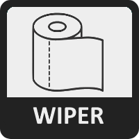
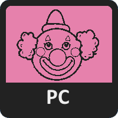
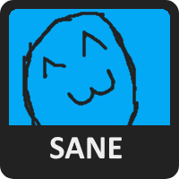
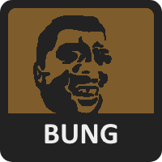
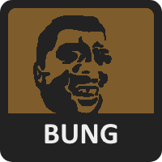

BUNGHIDEOUS
ZONK
PROBLEMATIC



 

ZonkValues is a quiz aimed at the members of the Pseud Central community attempting to diagnose whatever the fuck is wrong with you guys. You will be presented by a statement, and then you will answer with your opinion on the statement, from Strongly Agree to Strongly Disagree, with each answer slightly affecting your scores. At the end of the quiz, your answers will be compared to the maximum possible for each value, thus giving you a percentage. Answer honestly!
There are questions in the test.
There are three independent axes - Bunghideous, Zonk, and Problematic - and each has two opposing values assigned to them. They are:
BUNGHIDEOUS
Those with higher Wiper scores are opposed to bung and stench in favor of hygiene.
WIPER
BUNG
Those with higher Bung scores are bunghideous.
ZONK
Those with higher Sane scores are, as the name implies, mentally stable.
SANE
ZONK
Those with higher Zonk scores believe roadkill is inherently funny.
PROBLEMATIC
Those with higher PC scores are opposed to homework, opposed to dinner, and like wyuhmen.
PC
Problematic
Those with higher Problematic scores make excellent redditors.
In addition to matching you to the zonk values, the quiz also attempts to match you to a prominent zonker. This is a work in progress and is much less accurate than the values and axes, so don't take it too seriously. If you disagree with your assigned zonker, cope and seethe lol.
¯\_(ツ)_/¯
If you have any suggestions or constructive criticism and are still reading this, cope and seethe.